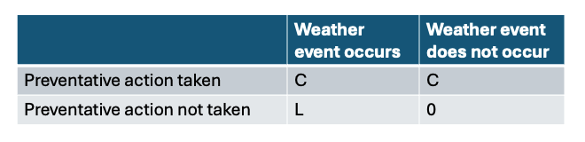
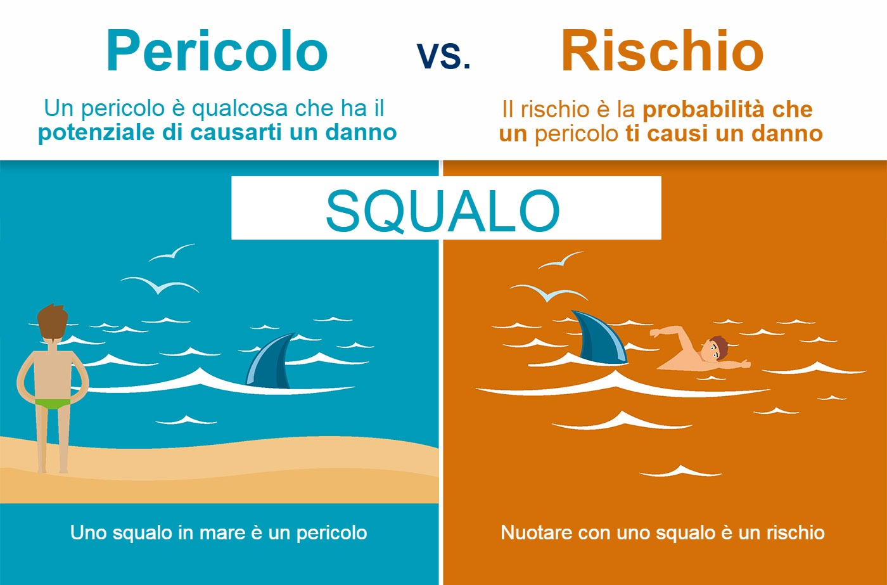
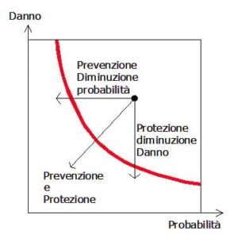

Probabilità¶
Definizione di probabilità matematica¶
Derivata da un'opera di
Andrea Minini - piva 09286581005 - email: info@andreaminini.com - PEC andreaminini@pec.it
Licenza CC BY 4.0 Attribution 4.0 International Deed https://www.andreaminini.org/statistica/probabilita/
Il calcolo delle probabilità si propone di associare ad ogni evento un numero, denominato probabilità dell’evento, che consente di esprimere quantitativamente il grado di fiducia sul verificarsi dell'evento.
Si definisce probabilità di un evento il rapporto fra il numero dei casi favorevoli ed il numero dei casi possibili, supposti tutti ugualmente possibili.
La probabilità di un evento viene assegnata con il seguente procedimento:
si determina il numero di tutti i casi possibili;
si determina il numero dei casi favorevoli, cioè di quei casi che rendono verificato l'evento di cui si vuole calcolare la probabilità;
si calcola il rapporto tra il numero dei casi favorevoli e il numero dei casi possibili.
Secondo questa definizione, ogni probabilità è un numero compreso tra 0 e 1. Inoltre, la probabilità di un evento impossibile è 0 e la probabilità di un evento certo è 1.
Differenza tra probabilità a priori e a posteriori¶
La probabilità può essere calcolata in due modi diversi, a seconda della natura del fenomeno o dell'evento aleatorio.
Probabilità a priori (o teorica) La probabilità a priori viene calcolata senza che siano eseguite delle prove concrete (dati empirici). Si basa su un modello teorico ideale costruito utilizzando la teoria della probabilità classica. In questi casi basta definire la probabilità come quoziente fra il numero dei casi favorevoli (F) e il numero dei casi possibili (N). p=FN
Dove F è un dato teorico ottenuto analizzando il problema.
Esempio. Un esempio tipico è il dado con 6 facce. Ogni faccia ha la
stessa probabilità di uscire se il dado non è truccato. Quindi, non
occorre fare nessuna stima per calcolare la probabilità. Mi basta
sapere che ogni faccia ha una probabilità pari a 1/6.
Probabilità a posteriori (statistica) La probabilità a posteriori si determina attraverso l'accumulo di dati empirici reali ottenuti da una serie di prove ripetute, applicando la legge empirica del caso. Questo metodo sfrutta l'esperienza diretta e l'osservazione continua per fornire una stima più accurata e rappresentativa della probabilità di un evento. E' quella maggiormente impiegata nella statistica inferenziale. In pratica, si effettuano N prove e si misura quante volte si verifica un esito favorevole. La probabilità statistica è il quoziente tra i casi favorevoli ottenuti (F) e il numero totale delle prove effettuate (N).
Dove F è la quantità di eventi favorevoli rilevati durante le prove ripetute e gli esperimenti.
Esempio. Quando un dado è truccato la probabiltà teorica non
riflette più la reale probabilità degli esiti. In questi casi
ricorro alla probabilità a posteriori, misurando la probabilità
dell'evento tramite la frequenza relativa degli esiti favorevoli di
una serie di prove, osservazioni o esperimenti. Occorre però fare
molte prove per avere una stima affidabile della
probabilità. Secondo la legge empirica del caso, quante più
osservazioni vengono fatte, tanto più la frequenza relativa (F/N)
si avvicina alla reale probabilità dell'evento (P).
Previsioni meteorologiche e probabilità¶
Il modello costi-perdite¶
Nel mondo delle previsioni meteorologiche, la comprensione del delicato equilibrio tra azione preventiva e perdita potenziale è fondamentale. Navigare con sicurezza nella complessità dei rischi legati al meteo non è facile: il processo decisionale probabilistico è fondamentale per i leader aziendali, ma può essere difficile da padroneggiare.
Le previsioni meteorologiche a medio e lungo termine svolgono un ruolo fondamentale nel quadro dei costi-perdite, fornendo la probabilità (P) degli eventi meteorologici. Il modello di costo-perdita è uno strumento essenziale per qualsiasi azienda interessata da rischi legati alle condizioni atmosferiche.
Qui esploriamo le basi del modello decisionale costo-perdita, un principio fondamentale che guida le decisioni dei dirigenti aziendali bilanciando i costi delle misure preventive con le perdite potenziali derivanti dagli eventi meteorologici.
Comprendere il modello costi-perdite¶
Il modello costi-perdite è uno strumento decisionale che valuta il compromesso tra il costo dell'azione preventiva (C) e la perdita potenziale (L) nel caso in cui si verifichi un evento meteorologico senza mitigazione. Questo modello aiuta a rispondere a una domanda cruciale: "Il costo dell'azione è inferiore alla perdita attesa dall'evento, considerando la sua probabilità (P)?".
La matrice dei costi è:
Il costo atteso dell'azione preventiva è C; il costo atteso della mancata azione preventiva è P*L. L'azione preventiva è la decisione giusta in un'analisi costi-benefici se C < P*L ed è la decisione sbagliata se C > P*L. La soglia di probabilità al di sopra della quale ha senso adottare un'azione preventiva è C/L. Questo è il rapporto costi-perdite.
Una sfida critica nell'utilizzo del modello decisionale costo-perdita, e in effetti una considerazione significativa per qualsiasi quadro predittivo, è l'assunto intrinseco che i decisori hanno numerose opportunità di applicare queste decisioni, come se fossero il "banco" in uno scenario da casinò. Questa prospettiva presuppone una capacità a lungo termine di assorbire la variabilità e le perdite occasionali.
Anche se si opera alla soglia di probabilità ottimale in cui i costi dell'azione preventiva si allineano alle perdite potenziali (P=C/L), il rischio di perdite consecutive è tutt'altro che banale, anche se le probabilità diminuiscono quando si utilizza una previsione affidabile rispetto a una previsione inaffidabile.
Questo grafico di Brian Zimmerman, scienziato climatico di Salient, illustra il rischio di perdite consecutive nell'arco di diverse stagioni e dimostra che le probabilità di questo rischio diminuiscono quando si utilizza una previsione affidabile rispetto a una previsione inaffidabile. (ODDS: il rapporto tra la probabilità p di un evento e la probabilità che tale evento non accada)¶
Ciò sottolinea un aspetto vitale della gestione del rischio: la capacità di sopportare più eventi avversi in successione. Questa realtà richiede una solida strategia finanziaria che non consideri solo le probabilità statistiche degli eventi meteorologici, ma anche la resilienza finanziaria per sopportare periodi di perdite ripetute.
Comprendere questa dinamica è fondamentale per sfruttare efficacemente il modello decisionale costi-perdite per aumentare il ROI a lungo termine: è necessario un approccio globale al rischio che tenga conto del potenziale di anni consecutivi di risultati sfavorevoli.
Vediamo alcuni esempi reali perché, per le aziende del settore energetico e agricolo, questo modello non è solo teorico. Ecco come si applica il modello costi-perdite a questi settori.
Energia
Le aziende energetiche devono affrontare la sfida di bilanciare la domanda e l'offerta, soprattutto con l'aumento delle fonti di energia rinnovabili come l'energia eolica e solare, che sono direttamente influenzate dalle condizioni meteorologiche. Utilizzando il modello costi-perdite, le utility e le società energetiche possono programmare la manutenzione degli impianti, la gestione della vegetazione, il posizionamento delle squadre, l'approvvigionamento di gas e altro ancora. Hanno la massima probabilità di avere vantaggio economico sulla base delle previsioni meteorologiche probabilistiche a medio e lungo termine.
Questo non solo è in grado di aumentare l'affidabilità e l'efficienza della fornitura di energia, ma ottimizza anche la pianificazione finanziaria e la gestione del rischio per un settore profondamente colpito da caldo e freddo estremi, inondazioni e siccità, vento e sole, neve, ghiaccio e incendi.
Agricultura
Per il settore agricolo, il quadro di riferimento costi-perdite aiuta a prendere decisioni informate in un'epoca di clima volatile sulla semina, irrigazione, applicazione di sostanze nutritive, raccolta e altro ancora. Le condizioni meteorologiche causano la maggiore variabilità nella produzione di colture, più del suolo, della terra, dell'abilità dell'agricoltore o della genetica delle piante. Con previsioni a medio e lungo termine precise, affidabili e calibrate:
gli agricoltori possono essere più sicuri di intraprendere azioni come l'acquisto di sementi resistenti alla siccità o l'applicazione precoce di fertilizzanti e prodotti per il controllo dei parassiti per proteggersi da potenziali fallimenti nel raccolto dovuti a siccità, inondazioni o temperature estreme,
i fornitori di fattori di produzione - tra cui sementi, sostanze nutritive e prodotti per la protezione delle colture - possono prendere decisioni più informate riguardo alla produzione e all'immissione dei prodotti sugli scaffali di tutto il mondo
i produttori di alimenti e bevande che dipendono dalle rese dei raccolti per soddisfare le previsioni possono valutare i costi delle decisioni di copertura e di contratti a termine.
Se applicato con costanza nel tempo, questo approccio al processo decisionale informato riduce al minimo i rischi e aumenta la redditività.
La previsione probabilistica¶
Le previsioni di tipo probabilistico si basano sul concetto di incertezza che è una caratteristica fondamentale del tempo meteorologico e del clima.
Ogni previsione meteorologica, non solo a breve o medio termine (1-5 giorni) ma soprattutto a lungo termine (6-15 giorni), risulta più completa se riporta una descrizione della sua incertezza.
L’incertezza è legata principalmente a due elementi: al tipo di fenomeno che si vuole prevedere, ovvero alla sua predicibilità, e alla non-linearità del sistema terra-oceani-atmosfera, che è essenzialmente un sistema caotico.
La predicibilità diminuisce se diminuiscono le dimensioni caratteristiche del fenomeno meteo e la sua durata: un temporale della durata di 30 minuti che interessa una porzione di territorio di 5-10 chilometri quadrati è molto meno predicibile di un sistema frontale che si estende per 500 chilometri e persiste nella sua dinamica per più giorni. La non-linearità si basa invece sul fatto che i modelli matematici, alla base delle previsioni meteorologiche, portano a risultati molto diversi anche per variazioni infinitesimali delle condizioni iniziali all’aumentare del tempo di simulazione. Poiché lo stato iniziale dell’atmosfera fornito da tutte le tipologie di sensori meteorologici sparsi per il globo mai potrà essere rappresentato in maniera esaustiva e del tutto affidabile, l’incertezza aumenterà sempre inevitabilmente all’aumentare dell’orizzonte temporale di una previsione.
Possiamo pertanto concludere che l’affidabilità di una previsione non solo diminuisce all’aumentare del dettaglio spaziale ma anche all’aumentare dell’orizzonte temporale.
Quantificare l'incertezza: i modelli probabilistici¶
Per una previsione oltre il quinto giorno diventa imprescindibile l’introduzione della probabilità di accadimento di un fenomeno atmosferico ovvero l’espressione che quantifica la sua incertezza.
Se alla base del bollettino ordinario ci sono prevalentemente i modelli meteorologici di tipo deterministico, per la previsione oltre il quinto giorno è fondamentale poter disporre di modelli meteorologici di tipo probabilistico o ensemble. La differenze principali tra modello deterministico e probabilistico si possono riassumere brevemente come segue:
i modelli deterministici compiono una singola corsa o simulazione con lo stato iniziale più “verosimile” (analisi) e determinano in uscita un valore nivoco di ogni variabile meteorologica fondamentale;
i modelli probabilistici/ensemble compiono un elevato numero di simulazioni (denominate “membri”) partendo da condizioni iniziali leggermente diverse; i risultati vengono elaborati statisticamente in modo da ottenere una “situazione media” e l’indicazione della “dispersione” degli altri membri rispetto alla media (deviazione standard o spread) e ne indica proprio l’incertezza. I risultati infine vengono raggruppati in “cluster” di situazioni simili, riferite in particolare alla temperatura a 850hPa, all’altezza geopotenziale a 500hPa e alla probabilità di precipitazione.
E’ importante precisare anche che, mentre i modelli deterministici hanno tempi di calcolo “ragionevoli” e “gestibili” anche per centri meteo regionali, i modelli probabilistici/ensemble girano generalmente nei principali centri meteo internazionali perché necessitano di procedure statistico-matematiche molto complesse e onerose a livello computazionale.
Protezione civile e probabilità¶
La differenza tra Rischio, Pericolo e Danno¶
Pericolo¶
Definizione di Pericolo
Proprietà o qualità intrinseca di un determinato fattore avente il potenziale di causare danni. PERICOLO ≠ RISCHIO
Rischio¶
Definizione di Rischio
Probabilità di raggiungimento del livello potenziale di danno nelle condizioni di impiego o di esposizione ad un determinato fattore o agente oppure alla loro combinazione.
Come misurare il rischio?¶
Stima del rischio: definizione della probabile gravità del danno e della probabilità del suo accadimento
R = P x D
R = rischio
P = probabilità o frequenza del verificarsi delle conseguenze
D = danno/magnitudo (gravità) delle conseguenze
Riduzione del Rischio¶
Gli interventi devono quindi ridurre il rischio fino a:
Rischio tollerabile: rischio accettato in seguito alla ponderazione del rischio. Il rischio tollerabile è anche detto “rischio non significativo” o “rischio accettabile”. Il rischio tollerabile non dovrebbe richiedere ulteriore trattamento.
Rischio residuo: Rischio rimanente a seguito del trattamento del rischio. Il rischio residuo comprende anche i rischi non identificabili.
Azioni di riduzione del rischio:
Prevenzione: riduce la probabilità di accadimento
Protezione: agisce diminuendo la gravità del danno
Prevenzione: Il complesso delle disposizioni o misure necessarie per evitare o diminuire i rischi
Protezione: Difesa contro ciò che potrebbe recare danno. Elemento che si interpone tra qualcuno che può subire un danno e ciò che lo può causare.
Sistema di allertamento¶
Un sistema di allertamento, ci ha ricordato più volte l'Organizzazione Meteorologica Mondiale, è fondato su un binomio indissolubile: early warning & early action. Se al preannuncio previsionale fornito dallo "warning" non corrisponde un'altrettanto tempestiva messa in opera della "action", cioè di provvedimenti atti a minimizzare l'esposizione al pericolo in termini di vite umane, lo warning resta un mero esercizio tecnico-scientifico.
Il nodo cruciale, con l'allertamento meteo-idrologico, è che stiamo parlando non solo di prevedere la dinamica di un sistema fisico caotico (l'atmosfera), ma anche di valutarne gli impatti su un sistema altrettanto complesso (il territorio, a maggior ragione se intensamente antropizzato): incertezza per incertezza, fa incertezza al quadrato. Quindi lo warning, che piaccia o meno (le leggi della Fisica restano tali anche quando non riscontrano il nostro gradimento) è un oggetto probabilistico, con questo sarebbe anche ora di fare pace. Invece la action è un oggetto deterministico, anzi a volte è addirittura binario, tertium non datur: o prendo un provvedimento o non lo prendo. O mando i lavoratori a casa prima di fine turno e fermo per quel giorno le attività dell'azienda, o tengo aperto, o sospendo le lezioni scolastiche e universitarie o le confermo, o chiudo un ponte o non lo chiudo, o metto le strutture di prevenzione e i corpi di soccorso in configurazione rinforzata (cioè affronto dei costi, per esempio pago degli straordinari ai reperibili) o le lascio il configurazione base. E allora ci vuole la cultura di base per capire che attuare azioni deterministiche sulla base di una previsione probabilistica è un investimento statistico: a parità di warning, su dieci volte che prendo una certa action, capita l'occasione (o le occasioni) in cui aver preso quei provvedimento preventivi mi ha permesso di salvare frotte di vite umane.
La cosa che più muove allo sconforto e alla rabbia, di fronte all'evento valenciano, non è neanche il fatto che il warning era stato emanato tempestivamente e con il livello adeguato di allerta, ma sia mancata l'action, cioè che la stragrande maggioranza delle vittime (il cui bilancio, visto il numero dei dispersi, rischia seriamente di quintuplicare o decuplicare rispetto alle già spaventose cifre attuali) poteva essere salvata, se si fossero presi seriamente in considerazione gli avvisi diramati dall'agenzia meteorologica statale spagnola e fermate per tempo tutte le attività, evitando che migliaia di persone fossero colte dall'evento sul posto di lavoro, o al centro commerciale, o per strada mentre rientravano a casa dall'uno o dall'altro luogo.
La cosa che muove allo sconforto e alla rabbia, è la consapevolezza che se per quel giorno si fossero fermate la società e l'economia (apriti cielo) e poi, al massimo grado di allerta, non fosse corrisposta una catastrofe di pari livello (ovvero fosse piovuto meno del preventivato, o avesse piovuto quanto previsto in alcune zone allertate ma non in tutte, o avesse anche piovuto tantissimo ovunque ma non fossero esondati i fiumi e non si fossero allagate le città), avremmo assistito (sarebbe capitato in Spagna come avviene regolarmente in Italia) alle feroci polemiche verso il sistema di allertamento, che avrebbe dovuto rispondere dei danni del "falso allarme". Salvo, poi, accusare lo stesso sistema di "mancato allarme" in tutti i casi in cui gli eventi sono andati al di là di quanto preventivabile in anticipo.
E in Spagna, aspetto non banale, sono anche facilitati dalla possibilità di aggiornare i codici colore delle allerte in corso d'evento, ovvero di ora in ora o addirittura ogni 10 minuti quando la situazione lo richieda, alzando quindi il livello anche da verde a rosso (o viceversa declassandolo) a cadenza ravvicinata, inevitabile prezzo da pagare se si vuole alzare l'attendibilità del sistema, con eventi così estremi e deflagranti... in Italia provate a proporre di introdurre un sistema del genere, e poi mi raccontate come la prende il tessuto socio-economico, sia nel pubblico che nel privato, dalla classe imprenditoriale agli amministratori pubblici fino ai singoli cittadini, ma che scherzate, me lo dovete dire il giorno prima (i più ragionevoli, altri non si accontentano neanche di quello) il colore dell'allerta, e se mi dite rossa e poi non viene giù il mondo (o mi dite gialla e poi viene giù il mondo), sarete messi alla gogna, sia mediatica che legale.
Perché non c'è la disponibilità a capire che il rischio è, sempre, una probabilità, più o meno alta, ma una probabilità, mai una certezza. Se i meteorologi e gli idrologi avessero la palla di vetro, si chiamerebbero veggenti, non meteorologi o idrologi. Allerta rossa non vuol dire che necessariamente arriverà l'apocalisse, ma che la possibilità di quest'ultima, quel giorno in quella zona, c'è, e siccome la posta in gioco è molto alta, trattandosi di decine, centinaia o migliaia di vite umane, questa eventualità va presa molto seriamente in considerazione, anche quando la probabilità magari non è alta, figurarsi quand'è elevata. Analogamente, allerta gialla - specie se, come in Italia, il codice colore va emesso il giorno prima, e non è modificabile di ora in ora in corso d'evento - non vuol dire che gli eventi non potranno essere gravi; peraltro il codice giallo per temporali, come dovrebbe essere noto a tutti, non vuol dire che i fenomeni non saranno intensi, ma che lo saranno a livello localizzato e non diffuso, e più i temporali sono localizzati, più la stima dei mm di pioggia che potranno cadere in un certo numero di ore è aleatoria, questo ormai dovrebbero averlo imparato anche i sassi (ma alcune persone, a quanto pare, sono assai meno recettive di questi ultimi, a volte anche fra gli addetti ai lavori, figuriamoci nel resto della cittadinanza).
Finché non si impara che “complessità significa dover passare da un mondo di previsioni certe a uno di previsioni basate sulla probabilità” (cit. Giorgio Parisi), con tutto quel che ne consegue in termini di gestione dei provvedimenti preventivi e di criteri di valutazione della loro efficacia, non ne usciremo mai. E di questa ottusa ritrosia a ragionare in termini probabilistici, in era di crisi climatica galoppante, ne faremo le spese sempre più spesso, altro concetto che fa fatica a entraci in testa, a quanto pare. "Vas a la moda", recita maledettamente beffardo quel cartellone pubblicitario sullo fondo, dietro quell'altrettanto tragicomico "benvenidos" al centro commerciale che è diventato il sepolcro di un numero ancora imprecisato di persone. E' tardivamente ora che la cultura del rischio, a partire dalla cultura della probabilità, diventino di tendenza, facendo invece passare di moda il sempre più insostenibile e demenziale modello di sviluppo in cui non si può rallentare la corsa alla produzione e ai consumi, neanche per qualche ora, se c'è un pericolo in vista per la vita delle persone.
2/11/2024
Filippo Thiery